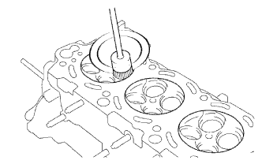
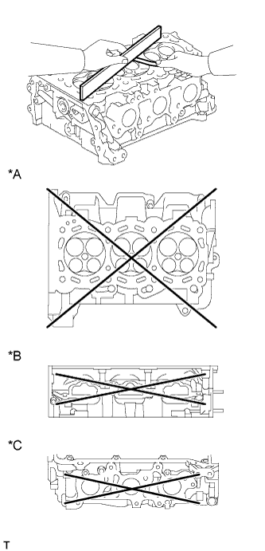

ГОЛОВКА БЛОКА ЦИЛИНДРОВ > ПРОВЕРКА |
| 1. ОЧИСТИТЕ ГОЛОВКУ БЛОКА ЦИЛИНДРОВ В СБОРЕ |
С помощью скребка для прокладок удалите остатки материала прокладки с поверхности, которая соприкасается с блоком цилиндров.
|  |
Проволочной щеткой удалите нагар из камер сгорания.
С помощью специальной кисти растворителем очистите все направляющие втулки клапанов.
Мягкой кистью и растворителем тщательно очистите головку блока цилиндров.
| 2. ПРОВЕРЬТЕ ГОЛОВКУ БЛОКА ЦИЛИНДРОВ В СБОРЕ |
|  |
С помощью прецизионной поверочной линейки и щупа измерьте величину коробления поверхностей, контактирующих с блоком цилиндров в сборе и коллекторами.
| Параметр / Устройство | Заданные условия |
| Со стороны блока цилиндров | 0,05 мм (0,00197 дюйма) |
| Со стороны впуска | 0,08 мм (0,00315 дюйма) |
| Со стороны выпуска | 0,08 мм (0,00315 дюйма) |
| Параметр / Устройство | Заданные условия |
| Со стороны блока цилиндров | 0,10 мм (0,00394 дюйма) |
| Со стороны впуска | 0,10 мм (0,00394 дюйма) |
| Со стороны выпуска | 0,10 мм (0,00394 дюйма) |
| *A | Со стороны блока цилиндров |
| *B | Со стороны впуска |
| *C | Со стороны выпуска |
Методом цветной дефектоскопии проверьте впускные каналы, выпускные каналы и поверхность блока цилиндров на наличие трещин.
При обнаружении трещин замените головку блока цилиндров в сборе.
| 3. ОЧИСТИТЕ СЕДЛО КЛАПАНА |
Твердосплавной фрезой с углом заточки 45° обработайте поверхности седел клапанов.
| *1 | 45° Твердосплавная фреза |
| 4. ПРОВЕРЬТЕ ВПУСКНОЙ КЛАПАН |
Очистите клапаны.
Удалите с тарелки клапана нагар скребком для удаления остатков прокладок.
Тщательно очистите клапан металлической щеткой.
Микрометром измерьте диаметр штока клапана.
Проверьте угол наклона рабочей фаски на тарелке клапана.
| *1 | Угол наклона фаски тарелки клапана |
Прошлифуйте клапан, чтобы удалить раковины и нагар.
Убедитесь, что рабочая фаска на тарелке клапана имеет правильный угол наклона.
Штангенциркулем измерьте расстояние от рабочей фаски до края тарелки клапана.
| *1 | Предельно допустимая толщина: |
С помощью штангенциркуля измерьте общую длину клапана.
| 5. ПРОВЕРЬТЕ ВЫПУСКНОЙ КЛАПАН |
Очистите клапаны.
Удалите с тарелки клапана нагар скребком для удаления остатков прокладок.
Тщательно очистите клапан металлической щеткой.
Микрометром измерьте диаметр штока клапана.
Проверьте угол наклона рабочей фаски на тарелке клапана.
| *1 | Угол наклона фаски тарелки клапана |
Прошлифуйте клапан, чтобы удалить раковины и нагар.
Убедитесь, что рабочая фаска на тарелке клапана имеет правильный угол наклона.
Штангенциркулем измерьте расстояние от рабочей фаски до края тарелки клапана.
| *1 | Предельно допустимая толщина: |
С помощью штангенциркуля измерьте общую длину клапана.
| 6. ПРОВЕРЬТЕ МАСЛЯНЫЙ ЗАЗОР НАПРАВЛЯЮЩЕЙ ВТУЛКИ КЛАПАНА |
Нутромером измерьте внутренний диаметр направляющей втулки клапана.
Вычтите измеренное значение диаметра штока клапана из измеренного значения внутреннего диаметра направляющей втулки клапана.
| Параметр / Устройство | Заданные условия |
| Впуск | 0,025 - 0,060 мм (0,000984 - 0,00236 дюйма) |
| Выпуск | 0,030 - 0,065 мм (0,00118 - 0,00256 дюйма) |
| Параметр / Устройство | Заданные условия |
| Впуск | 0,08 мм (0,00315 дюйма) |
| Выпуск | 0,10 мм (0,00394 дюйма) |
| 7. ПРОВЕРЬТЕ СЕДЛО ВПУСКНОГО КЛАПАНА |
Нанесите тонкий слой берлинской лазури на торец клапана.
Слегка вдавите клапан в седло клапана.
Проверьте тарелку клапана и седло клапана в порядке, описанном ниже.
| *1 | Ширина |
Убедитесь, что берлинская лазурь распределена по всей поверхности клапана. В противном случае замените клапан.
Если берлинская лазурь распределена по всему седлу клапана, направляющая и седло клапана концентричны. В противном следует повторно прошлифовать поверхность седла клапана.
Убедитесь, что седло клапана сопрягается со средней частью торца клапана, а ширина зоны контакта равна 1,1–1,5 мм (0,0433–0,0591 дюйма).
| 8. ПРОВЕРЬТЕ СЕДЛО ВЫПУСКНОГО КЛАПАНА |
Нанесите тонкий слой берлинской лазури на торец клапана.
Слегка вдавите клапан в седло клапана.
Проверьте тарелку клапана и седло клапана в порядке, описанном ниже.
| *1 | Ширина |
Убедитесь, что берлинская лазурь распределена по всей поверхности клапана. В противном случае замените клапан.
Если берлинская лазурь распределена по всему седлу клапана, направляющая и седло клапана концентричны. В противном следует повторно прошлифовать поверхность седла клапана.
Убедитесь, что седло клапана сопрягается со средней частью торца клапана, а ширина зоны контакта равна 1,1–1,5 мм (0,0433–0,0591 дюйма).
| 9. ПРОВЕРЬТЕ ВНУТРЕННЮЮ ПРУЖИНУ СЖАТИЯ |
Штангенциркулем измерьте общую длину внутренней компрессионной пружины в свободном состоянии.
С помощью стального уголка измерьте отклонение от перпендикулярности внутренней пружины сжатия.
| *1 | Отклонение |
С помощью устройства для проверки пружин измерьте натяжение пружины клапана при заданной длине после установки.